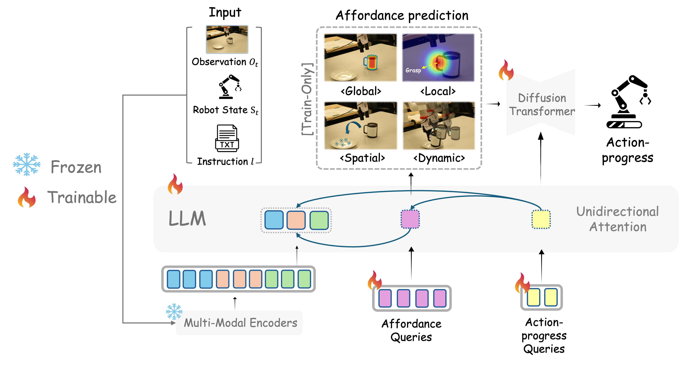

- Structured affordance foresight anticipates future interaction needs. PALM predicts factorized affordances for object relevance, contact geometry, spatial placement, and motion dynamics. These global, local, spatial, and dynamic cues help the policy reason about which object matters, where to interact, where to place or move it, and how the next interaction should unfold.
- A progress-aware diffusion policy coordinates long-horizon subtasks. The policy conditions on the predicted affordances and jointly estimates actions and continuous within-subtask progress. These estimates guide continuation, transition, and termination decisions, reducing repeated or skipped actions during multi-step manipulation.
- Simulation and real-world evaluations demonstrate long-horizon robustness. PALM reaches 91.8% success on LIBERO-LONG, improves average length on CALVIN ABCD by 12.5%, and achieves a twofold improvement over real-world baselines across three generalization settings: object relocation, unseen lighting, and visual distractors.
PALMProgress-Aware Policy Learning via Affordance Reasoning for Long-Horizon Robotic Manipulation
CVPR 2026
TL;DR
We introduce PALM, a vision-language-action (VLA) model for long-horizon robotic manipulation that anticipates future interactions and tracks subtask progress. By combining visual cues about objects, contact, and motion with progress-aware action generation, PALM helps robots carry out coherent multi-step tasks.
PALM tracks progress through the original task.
The policy executes the task under changed illumination.
PALM responds when objects are moved during execution.
Abstract
Recent vision-language-action models show strong promise for robotic manipulation, but they remain brittle in long-horizon, multi-step tasks. PALM addresses this limitation by structuring policy learning around interaction-centric affordance reasoning and subtask progress cues. It predicts structured future affordances that capture object relevance, contact geometry, spatial placements, and motion dynamics, then conditions a progress-aware diffusion policy on these affordance representations. The resulting policy jointly predicts actions and continuous within-subtask progress values, helping the robot decide when to continue, transition, or terminate a subtask. Across simulation and real-world experiments, PALM improves long-horizon manipulation performance, reaching a 91.8% success rate on LIBERO-LONG, improving average length on CALVIN ABCD by 12.5%, and achieving a 2× improvement over real-world baselines across three generalization settings.
Contributions
PALM Method
PALM introduces two complementary query sets on top of a multimodal VLA backbone: affordance queries that anticipate task-relevant future interaction cues, and action-progress queries that generate actions while estimating subtask completion. The affordance representation is factorized into global, local, spatial, and dynamic components, encouraging the policy to reason about what object matters, where to interact, where to place or move, and how the next interaction should unfold.
Structured affordance foresight
Predicts future interaction cues for object relevance, contact geometry, spatial placement, and motion dynamics.
Progress-aware control
Jointly predicts action and continuous progress to stabilize subtask transitions and reduce repeated or skipped actions.
Long-horizon robustness
Maintains coherent behavior under object relocation, unseen lighting, and visual distractors in real-world rollouts.

PALM architecture: multimodal encoding, structured affordance queries, and action-progress diffusion decoding.
Quantitative Results
Robustness in real-world manipulation
PALM completes an average of 3.05 subtasks under random object relocation, 3.80 with visual distractions, and 3.55 under unseen lighting. OpenVLA completes 0.95, 1.60, and 1.25 subtasks, respectively; Octo completes 0.65, 0.95, and 1.05.
| Method | 1 task | 2 tasks | 3 tasks | 4 tasks | 5 tasks | 6 tasks | Average length ↑ |
|---|---|---|---|---|---|---|---|
| Random localization | |||||||
| OpenVLA | 0.45 | 0.30 | 0.15 | 0.05 | 0.00 | 0.00 | 0.95 |
| Octo | 0.35 | 0.20 | 0.10 | 0.00 | 0.00 | 0.00 | 0.65 |
| PALM | 0.70 | 0.65 | 0.55 | 0.45 | 0.40 | 0.30 | 3.05 |
| Visual distraction | |||||||
| OpenVLA | 0.65 | 0.50 | 0.25 | 0.15 | 0.05 | 0.00 | 1.60 |
| Octo | 0.45 | 0.35 | 0.15 | 0.00 | 0.00 | 0.00 | 0.95 |
| PALM | 0.85 | 0.80 | 0.65 | 0.60 | 0.50 | 0.40 | 3.80 |
| Unseen lighting | |||||||
| OpenVLA | 0.55 | 0.35 | 0.25 | 0.10 | 0.00 | 0.00 | 1.25 |
| Octo | 0.50 | 0.35 | 0.15 | 0.05 | 0.00 | 0.00 | 1.05 |
| PALM | 0.80 | 0.70 | 0.60 | 0.60 | 0.45 | 0.40 | 3.55 |
Qualitative Results
A UFACTORY xArm6 with a Gripper G2 and two RealSense D455 cameras executes a six-step manipulation sequence. These PALM rollouts show the original task and three generalization settings: unseen lighting, visual distractions, and random object relocation.
Original
Unseen Lighting
Visual Distraction
Random Relocation
BibTeX
@inproceedings{liu2026palm,
title={PALM: Progress-Aware Policy Learning via Affordance Reasoning for Long-Horizon Robotic Manipulation},
author={Liu, Yuanzhe and Zhu, Jingyuan and Mo, Yuchen and Li, Gen and Cao, Xu and Jin, Jin and Shen, Yifan and Li, Zhengyuan and Yu, Tianjiao and Yuan, Wenzhen and Ding, Fangqiang and Lourentzou, Ismini},
booktitle={Proceedings of the IEEE/CVF Conference on Computer Vision and Pattern Recognition (CVPR)},
year={2026}
}